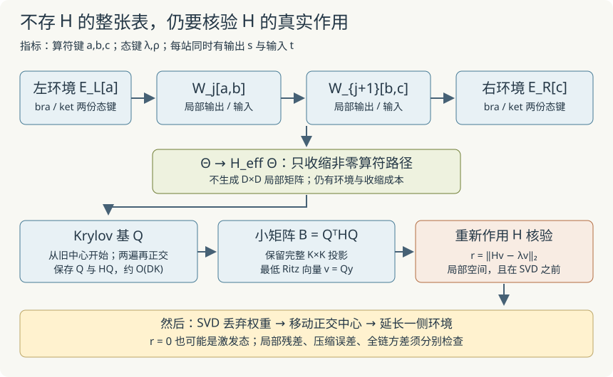

本页目录
基础衔接 14 · MPO 与 Krylov：不存局部矩阵，怎样继续求最低态？
先修：正交中心与环境缓存、数值方法。缓存讲把态写成张量，但还显式构造局部 Hamiltonian。本讲把算符也写成张量，只通过“给一个向量，返回 H 作用后的向量”建立搜索空间。仍保留可与完整小系统逐项对账的规模。
1. MPS 压缩态，MPO 组织算符
一个态只有输出物理指标；算符要同时记录输入与输出。矩阵乘积算符 MPO 写成
\(s_j\) 是 bra／输出指标，\(t_j\) 是 ket／输入指标，\(a_j\) 是算符键；它与 MPS 的态键是不同指标。每个 W 的矩阵格子里仍是一个局部算符。一般兼容的实张量都可以按这条规则收缩；是否存在很小的算符键维，则取决于具体 Hamiltonian。
沿用开放 Ising 链，Pauli 本征值 ±1、J=1：
取算符键状态为 0、1、2，定义
逐站沿矩阵行到列走一条允许路径。从状态2开始，可以先用 I 等待；通过 −gZ 直接到0，就产生一个单站横场；或先经 −X 到1，再经 X 到0，就产生一个相邻 −XX。到0以后只能用 I。不存在能够产生非相邻 XX 或两个横场乘积的路径。
两站时可直接乘出
链长增加只让“等待”的位置变多，因此恰好得到上面的求和。边界向量是定义的一部分；把开放链直接绕成环会改变允许路径，不能照搬。
2. 环境多了一个算符键
记左 MPO 环境为 \(E_L[a]_{\lambda\lambda'}\)。它同时记录算符键 a、bra 态键 λ、ket 态键 λ′。接入一个实 MPS 张量 A 与 MPO 张量 W 后，
初始空块是 \(E_L[a]=\ell_a\)。右环境反向更新：
最右空块是 \(E_R[a]=r_a\)。复数版本应把 bra 张量共轭，不能把本页实数代码当作复数程序。
三类 G/K/C 环境是缓存讲针对 Ising 相邻项组织的专用账本；MPO 环境则让算符键来携带这些未闭合的算符信息。本实现用非 Ising、非均匀键维、含三维物理站点的小算例验证一般收缩公式；网页扫描仍只演示二能级 Ising 模型，没有任意 Hamiltonian 自动编码器。
3. 只实现 H 的作用
中心为 j、j+1，合并中心向量记为 \(\Theta_{\lambda st\rho}\)。从左右环境与两个 MPO 张量得到
这就是程序的算符作用接口。先列出 W 中非零的局部算符元素，再收缩这些项，可以跳过大量已知为零的路径；不需要先生成 \(H_{\rm eff}\) 的全部矩阵元素。
混合正交形式仍然必要：左右块基正交时，中心坐标的范数是普通欧氏范数，H_eff 是实对称算符。一般非正交块虽然仍可收缩，却要处理额外度量，不能直接把下节普通对称求解器套上去。
对二能级站点，局部向量维数 \(D=4d_Ld_R\le4\chi^2\)。显式局部矩阵需存 \(D^2\) 个数，作用接口不存这张表。它仍要存环境、输入输出向量和收缩中间量，并有实际运算成本；“不存矩阵”不等于没有成本。
4. 用算符作用生长一个 Krylov 空间
从旧中心态归一化得到 \(q_1\)，考虑
直接保存这些幂会迅速失去线性独立性。实现每次先算 \(w=Hq_k\)，再从 w 中减去已有正交向量的分量：
浮点下再做一遍投影减法，减少正交性丢失；若剩余范数非零，归一化得到下一列。对称算符在精确算术中给出 Lanczos 三项递推；本教学实现采用完整再正交，并保留完整小投影矩阵，不强行把浮点中非零的远端项当成严格零。
记 Q 为实际得到的正交列，将缓存的 Hq_i 组成 HQ。小矩阵
的最低本征向量 y 给出 Ritz 向量 \(v=Qy\)。程序数值上对 B 做对称化，并使用前几讲已验证的小型对称求解器。这里仍然解一个 K×K 的稠密投影问题，只是没有生成 D×D 的原局部矩阵。当 K=D 时，优势自然会减弱。
固定当前 H 和起点，增大嵌套 Krylov 空间，理想 Ritz 最小值不会增加。因为 q₁ 就是旧中心态，未截断局部搜索的能量也不高于旧中心态，误差容差内可核验。但不同扫描运行的后续环境不同，不能把这句话推广成所有有限轮轨迹的逐步比较。
5. 残差必须直接量，零残差还不是基态证明
求得 v 后，本页重新调用作用接口，计算
它在 SVD 之前、当前两侧块支撑所定义的局部空间中测量。不要把它当作截断后整条链的物理残差。投影矩阵内部残差很小，也不意味着原局部算符的 r 很小。
再正交产生的新方向范数若低于 10⁻¹¹，程序停止生长；也会在达到最大步数或 D 时停止。最终仍报告显式 r，不能把任何停止原因都叫作收敛。
一个三维反例足以说明初向量的重要性：
每个 \(H^nq_1\) 都在同一条直线上，所以 K 增到多大也找不到能量 −2 的方向。算法返回 λ=1、r=0，完全正确地找到了一个激发态。若起点对最低态没有分量，或被对称性限制在另一个不变子空间，零残差不能替你补上那部分物理信息。

6. 接回扫描，分开观察三种误差
每一步：用当前有效 MPO 环境建立作用接口 → 从旧中心态生长 Krylov 空间 → 求 Ritz 态并直接量 r → 两站点 SVD 截断与归一化 → 按移动方向传递正交中心 → 只延长刚离开的一侧环境。
本页全部候选直接接受，沿用缓存讲的每轮 \(2(L-1)\) 次更新、固定60°实乘积初态。单步丢弃权重 ε 比较 Ritz 态与其压缩候选，不包含迭代求解没找到的方向。
| 误差或限制 | 怎样检查 |
|---|---|
| Krylov 局部求解不充分 | 显式局部 r，增加最大K并比较 |
| SVD 压缩 | 丢弃权重、增加χ后的变化 |
| 受限多体搜索或初态陷阱 | 不同初态、全局方差、已知精确参照 |
先用默认 L=8、g=1、χ=2、两轮、K最大16。再把 K 降到2，观察局部残差变化。最后提高 χ 到4，再比较 K=2与32。每次操作都从同一个初态重新运行。
| L=8，g=1，χ=2，两轮 | K最大2 | K最大4 | K最大16 |
|---|---|---|---|
| 最终能量 | −9.822065775 | −9.832685547 | −9.832701074 |
| 各步最大局部 r | 0.260412499 | 0.099124722 | 约4×10⁻¹⁴ |
| 局部算符作用总次数 | 140 | 196 | 403 |
精确开放链 E₀≈−9.837951447；其 Majorana 推导见缓存讲。K=16已在该轨迹所有局部问题中达到充分精度，最终能量仍有差距：迭代求解误差小，不代表χ=2的整条多体搜索已经精确。
无脚本参照：默认最终能量−9.832701074，范数平方约1，最大局部向量维数16，最大Krylov维数16；含初建的MPO环境递推36次。K=2和4的对照见表。这里没有计算完整物理方差。
“算符作用总次数”包含每次生成 Krylov 列、显式 Ritz 残差、旧态和截断候选能量的计算。环境计数含初建和每步延长，最终全链 MPO 能量与独立范数收缩另计各 L 次；它不是总运行时间。基向量和缓存的 Hq 仍占 \(O(DK)\)，小投影矩阵占 \(O(K^2)\)。实验规模用于验证机制，没有声称实现了高性能通用 DMRG 库。
7. 两道迁移题
题一。 三维对角例中，把初向量改为 \((1,1,1)/\sqrt3\)。K=1的 Ritz 能量是多少？K=3在精确算术下能否找到基态？为什么同样的结论不适用于原来的 \((0,1,0)\)？
检查起点看得到哪些谱方向
K=1只有起点本身，Rayleigh商是 \((-2+1+5)/3=4/3\)。三种本征值不同，且新起点在三个本征方向上都有非零分量，三个Krylov幂组成的Vandermonde结构满秩，所以K=3张成整个空间，可得到−2及零残差。原起点始终只看得到能量1的方向，幂向量秩一直为1；增加步数不会改变这一点。
题二。 某步未截断的局部 r=10⁻¹³，而SVD丢弃权重为0.01。能否说“整条链距精确基态只有10⁻¹³”？如果此步截断后升能，是否必然是MPO缓存错了？
把局部求解、压缩与全局目标分开
不能。r只测当前块支撑内Ritz态的本征方程，尚未包括SVD对物理态的改变，也未检查当前块外的方向。丢弃权重描述另一项压缩误差。截断后升能可以来自SVD的范数最佳近似并非能量最佳近似，不能单凭升能判定缓存有错。应分别对照完整小系统的算符作用、块正交性、局部残差、压缩保真度、全局能量与方差。
速查与资料
MPO携带算符路径；环境携带算符键和两份态键；Krylov只要求能计算Hv；残差必须回到原局部作用接口测量。下一步是张量方差与初态敏感性，它们没有被本页局部残差代替。
MPO表达、作用与变分求解背景见 Schollwöck 的MPS综述第5、6节。本页将算法限制在明示的实数/开放链模型，并以非Ising矩阵和独立NumPy扫描参照核验实现；这些有限验算不构成一般收敛定理。来源核查：2026-09-08。
后续诊断：全链方差与初态用双层MPO测H²，比较四个初态；两站点零方差激发态解释为何局部残差不能充当基态证书。